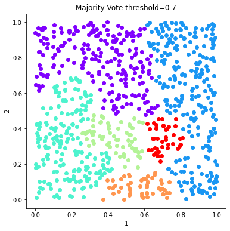

Build an ensemble using algorithms and distances, finish to see if it uncovers the lack of structure¶
In [1]:
import numpy as np
import pandas as pd
import openensembles as oe
import matplotlib.pyplot as plt
n_samples = 800
np.random.seed(0)
no_structure = np.random.rand(n_samples, 2), None
X,y = no_structure
df = pd.DataFrame(X)
d = oe.data(df, [1,2])
d.plot_data('parent')
Out[1]:

Create an ensemble¶
In [2]:
c = oe.cluster(d) #instantiate an object so we can get all available algorithms
a = c.algorithms_available()
#Seteverything to false by default, then change just those that are true
for alg in a.keys():
a[alg] = False
# remove DBSCAN -- this does very well on unstructured data, we want to ask if we can use poorly performing algorithms
# to identify there isn't structure.
del a['DBSCAN']
takesLinkages = a.copy()
takesDistances = a.copy()
takesK = a.copy()
takesLinkages['agglomerative'] = True
takesDistances['AffinityPropagation'] = True
takesDistances['agglomerative'] = True
takesK['kmeans'] = True
takesK['agglomerative'] = True
takesK['spectral'] = True
takesK['Birch'] = True
In [3]:
#setup the parameters of clustering here, algorithms are set by algorithms_available
K = range(2,20, 2)
linkages = ['average', 'complete', 'ward']
distances = ['euclidean', 'l1', 'l2', 'cosine']
In [4]:
# Create an ensemble: sweep K, distance metrics
c = oe.cluster(d)
for data_source in d.D.keys(): #if there were transformations in d.D
for algorithm in takesK.keys(): #linkage is only for agglomerative, which also accepts K and distances, so handle that here
if takesK[algorithm]:
for k in K:
if takesDistances[algorithm]:
if takesLinkages[algorithm]:
for linkage in linkages:
if linkage == 'ward':
out_name = '_'.join([data_source, algorithm, linkage, str(k)])
c.cluster(data_source, algorithm, out_name, K=k, Require_Unique= True, linkage=linkage)
else:
for dist in distances:
out_name = '_'.join([data_source, algorithm, dist, linkage, str(k)])
c.cluster(data_source, algorithm, out_name, K=k, Require_Unique= True, linkage=linkage, distance=dist)
else:
for dist in distances:
out_name = '_'.join([data_source, algorithm, dist, str(k)])
c.cluster(data_source, algorithm, out_name, K=k, Require_Unique= True, distance=dist)
else:
out_name = '_'.join([data_source, algorithm, str(k)])
c.cluster(data_source, algorithm, out_name, K=k, Require_Unique= True)
else: # does not take K
if takesDistances[algorithm]:
for dist in distances:
out_name = '_'.join([data_source, algorithm, dist])
c.cluster(data_source, algorithm, out_name, Require_Unique= True, distance=dist)
else:
out_name = '_'.join([data_source, algorithm])
c.cluster(data_source, algorithm, out_name, Require_Unique= True)
Plot example solutions from the ensemble¶
In [5]:
#plot some random number of solutions
names = c.labels.keys()
figs =[]
fig = 0
numSolutions = 6
#namesToSelect = random.sample(names, numSolutions)
namesToSelect = np.random.choice(list(names), numSolutions, replace=False)
for name in namesToSelect:
d.plot_data('parent', fig_num=fig, class_labels=c.labels[name], title=name)
plt.show()
fig+=1


Finish the ensemble using Majority Vote and Graph Closure¶
In [6]:
#View the ensembles
coMat = c.co_occurrence_matrix()
In [7]:
fig = coMat.plot(add_labels=False)
plt.show()

Graph Closure and Majority Vote Finishing¶
In [8]:
# Explore effects of threshold on graph closure
thresholds = [0.5, 0.6, 0.7]
fig = 0
c_graph_dict = {}
c_majority_vote_dict = {}
for threshold in thresholds:
c_graph = c.finish_graph_closure(threshold=threshold)
c_graph_dict[str(threshold)] = c_graph
c_majority_vote = c.finish_majority_vote(threshold=threshold)
c_majority_vote_dict[str(threshold)] = c_majority_vote
In [9]:
# Plot the solutions of Graph Closure
fig = 0
for threshold in c_graph_dict:
labels = c_graph_dict[threshold].labels['graph_closure']
d.plot_data('parent', fig_num = fig, class_labels=labels, title='Graph Closure threshold=%s'%(threshold))
plt.show()
fig+=1



In [10]:
# Plot the solutions of Majority Vote
fig = 0
figs =[]
for threshold in c_majority_vote_dict:
labels = c_majority_vote_dict[threshold].labels['majority_vote']
d.plot_data('parent', fig_num = fig, class_labels=labels, title='Majority Vote threshold=%s'%(threshold))
plt.show()
fig+=1


Use mutual information to compare solutions¶
In [11]:
mi_adjusted = c.MI(MI_type='adjusted')
In [12]:
mi_adjusted.matrix
Out[12]:
| parent_AffinityPropagation_euclidean | parent_AffinityPropagation_l1 | parent_AffinityPropagation_l2 | parent_AffinityPropagation_cosine | parent_Birch_2 | parent_Birch_4 | parent_Birch_6 | parent_Birch_8 | parent_Birch_10 | parent_Birch_12 | ... | parent_kmeans_18 | parent_spectral_2 | parent_spectral_4 | parent_spectral_6 | parent_spectral_8 | parent_spectral_10 | parent_spectral_12 | parent_spectral_14 | parent_spectral_16 | parent_spectral_18 | |
|---|---|---|---|---|---|---|---|---|---|---|---|---|---|---|---|---|---|---|---|---|---|
| parent_AffinityPropagation_euclidean | 1 | 0.969461 | 1 | 0.209621 | 0.335141 | 0.590467 | 0.512404 | 0.48408 | 0.44523 | 0.414046 | ... | 0.408465 | 0.294497 | 0.862462 | 0.440445 | 0.424347 | 0.402987 | 0.401602 | 0.394069 | 0.410029 | 0.38081 |
| parent_AffinityPropagation_l1 | 0.969461 | 1 | 0.969461 | 0.213415 | 0.335435 | 0.59303 | 0.512087 | 0.483666 | 0.443893 | 0.413146 | ... | 0.41119 | 0.290525 | 0.884902 | 0.441567 | 0.425006 | 0.408257 | 0.406893 | 0.396504 | 0.407576 | 0.383026 |
| parent_AffinityPropagation_l2 | 1 | 0.969461 | 1 | 0.209621 | 0.335141 | 0.590467 | 0.512404 | 0.48408 | 0.44523 | 0.414046 | ... | 0.408465 | 0.294497 | 0.862462 | 0.440445 | 0.424347 | 0.402987 | 0.401602 | 0.394069 | 0.410029 | 0.38081 |
| parent_AffinityPropagation_cosine | 0.209621 | 0.213415 | 0.209621 | 1 | 0.242749 | 0.234526 | 0.185983 | 0.210336 | 0.190399 | 0.176324 | ... | 0.188379 | 0.0216086 | 0.23508 | 0.168258 | 0.259891 | 0.186782 | 0.182965 | 0.193135 | 0.19965 | 0.196216 |
| parent_Birch_2 | 0.335141 | 0.335435 | 0.335141 | 0.242749 | 1 | 0.508628 | 0.387425 | 0.333584 | 0.30102 | 0.277996 | ... | 0.209868 | 0.0467874 | 0.369432 | 0.207698 | 0.233777 | 0.23128 | 0.226265 | 0.196106 | 0.200548 | 0.193935 |
| parent_Birch_4 | 0.590467 | 0.59303 | 0.590467 | 0.234526 | 0.508628 | 1 | 0.76154 | 0.655546 | 0.591377 | 0.54595 | ... | 0.392312 | 0.198955 | 0.642191 | 0.483194 | 0.417515 | 0.420269 | 0.410429 | 0.402403 | 0.405292 | 0.401369 |
| parent_Birch_6 | 0.512404 | 0.512087 | 0.512404 | 0.185983 | 0.387425 | 0.76154 | 1 | 0.860791 | 0.776469 | 0.716725 | ... | 0.502456 | 0.210214 | 0.548609 | 0.661448 | 0.520614 | 0.533831 | 0.523745 | 0.533287 | 0.520753 | 0.534332 |
| parent_Birch_8 | 0.48408 | 0.483666 | 0.48408 | 0.210336 | 0.333584 | 0.655546 | 0.860791 | 1 | 0.901994 | 0.832497 | ... | 0.578111 | 0.242268 | 0.512285 | 0.582165 | 0.577697 | 0.614991 | 0.604489 | 0.602341 | 0.565292 | 0.60368 |
| parent_Birch_10 | 0.44523 | 0.443893 | 0.44523 | 0.190399 | 0.30102 | 0.591377 | 0.776469 | 0.901994 | 1 | 0.922896 | ... | 0.632064 | 0.241825 | 0.467227 | 0.566899 | 0.569175 | 0.647343 | 0.640963 | 0.652209 | 0.608745 | 0.654803 |
| parent_Birch_12 | 0.414046 | 0.413146 | 0.414046 | 0.176324 | 0.277996 | 0.54595 | 0.716725 | 0.832497 | 0.922896 | 1 | ... | 0.656606 | 0.223226 | 0.434206 | 0.537632 | 0.557722 | 0.655527 | 0.649619 | 0.65647 | 0.604525 | 0.664299 |
| parent_Birch_14 | 0.401978 | 0.401213 | 0.401978 | 0.17428 | 0.261107 | 0.512584 | 0.672807 | 0.781366 | 0.866126 | 0.938449 | ... | 0.698166 | 0.209923 | 0.420044 | 0.51146 | 0.550516 | 0.647858 | 0.642208 | 0.64287 | 0.605493 | 0.650045 |
| parent_Birch_16 | 0.380923 | 0.380299 | 0.380923 | 0.181386 | 0.24737 | 0.485406 | 0.636992 | 0.739619 | 0.819721 | 0.888084 | ... | 0.733848 | 0.199443 | 0.398981 | 0.498559 | 0.536528 | 0.62365 | 0.618616 | 0.624268 | 0.601493 | 0.630623 |
| parent_Birch_18 | 0.381787 | 0.382899 | 0.381787 | 0.17488 | 0.237912 | 0.466649 | 0.61225 | 0.710755 | 0.787627 | 0.853267 | ... | 0.747679 | 0.193644 | 0.397183 | 0.494645 | 0.518654 | 0.611513 | 0.606637 | 0.604953 | 0.590918 | 0.609396 |
| parent_agglomerative_euclidean_average_2 | 0.343643 | 0.338745 | 0.343643 | 0.066765 | 0.0108438 | 0.227489 | 0.242171 | 0.263745 | 0.245721 | 0.22683 | ... | 0.206717 | 0.628865 | 0.330543 | 0.211525 | 0.240168 | 0.202114 | 0.201456 | 0.212692 | 0.219833 | 0.215635 |
| parent_agglomerative_l1_average_2 | 0.368787 | 0.375526 | 0.368787 | 0.0928533 | 0.00276252 | 0.247124 | 0.247635 | 0.268459 | 0.244716 | 0.225901 | ... | 0.215369 | 0.569525 | 0.370778 | 0.201076 | 0.23169 | 0.197841 | 0.197613 | 0.212314 | 0.209901 | 0.211804 |
| parent_agglomerative_l2_average_2 | 0.343643 | 0.338745 | 0.343643 | 0.066765 | 0.0108438 | 0.227489 | 0.242171 | 0.263745 | 0.245721 | 0.22683 | ... | 0.206717 | 0.628865 | 0.330543 | 0.211525 | 0.240168 | 0.202114 | 0.201456 | 0.212692 | 0.219833 | 0.215635 |
| parent_agglomerative_cosine_average_2 | 0.225842 | 0.230461 | 0.225842 | 0.422298 | 0.0897859 | 0.191577 | 0.167913 | 0.177371 | 0.159983 | 0.148795 | ... | 0.172441 | 0.0967384 | 0.232202 | 0.152929 | 0.186682 | 0.157084 | 0.156475 | 0.182078 | 0.153696 | 0.174593 |
| parent_agglomerative_euclidean_complete_2 | 0.317159 | 0.320283 | 0.317159 | 0.194373 | 0.00387307 | 0.315126 | 0.272157 | 0.244551 | 0.221258 | 0.204197 | ... | 0.20222 | 0.31119 | 0.343634 | 0.215008 | 0.21637 | 0.197096 | 0.195301 | 0.191723 | 0.211516 | 0.193564 |
| parent_agglomerative_l1_complete_2 | 0.280634 | 0.277189 | 0.280634 | 0.0178184 | 0.0592064 | 0.203288 | 0.264392 | 0.253682 | 0.229724 | 0.212029 | ... | 0.199497 | 0.560707 | 0.290779 | 0.250633 | 0.251161 | 0.217013 | 0.217734 | 0.207321 | 0.23222 | 0.199951 |
| parent_agglomerative_l2_complete_2 | 0.317159 | 0.320283 | 0.317159 | 0.194373 | 0.00387307 | 0.315126 | 0.272157 | 0.244551 | 0.221258 | 0.204197 | ... | 0.20222 | 0.31119 | 0.343634 | 0.215008 | 0.21637 | 0.197096 | 0.195301 | 0.191723 | 0.211516 | 0.193564 |
| parent_agglomerative_cosine_complete_2 | 0.225842 | 0.230461 | 0.225842 | 0.422298 | 0.0897859 | 0.191577 | 0.167913 | 0.177371 | 0.159983 | 0.148795 | ... | 0.172441 | 0.0967384 | 0.232202 | 0.152929 | 0.186682 | 0.157084 | 0.156475 | 0.182078 | 0.153696 | 0.174593 |
| parent_agglomerative_ward_2 | 0.251302 | 0.24618 | 0.251302 | 0.0424698 | 0.354837 | 0.237606 | 0.221009 | 0.245491 | 0.230387 | 0.212987 | ... | 0.195 | 0.207823 | 0.247492 | 0.188337 | 0.207098 | 0.207344 | 0.204933 | 0.223889 | 0.216431 | 0.219625 |
| parent_agglomerative_euclidean_average_4 | 0.594034 | 0.594233 | 0.594034 | 0.16729 | 0.316407 | 0.557806 | 0.504757 | 0.497709 | 0.476142 | 0.445257 | ... | 0.395785 | 0.347765 | 0.607982 | 0.477857 | 0.42329 | 0.397148 | 0.396079 | 0.385248 | 0.395152 | 0.388131 |
| parent_agglomerative_l1_average_4 | 0.608301 | 0.619274 | 0.608301 | 0.201869 | 0.283967 | 0.546995 | 0.484072 | 0.486864 | 0.455802 | 0.428936 | ... | 0.400987 | 0.324388 | 0.637036 | 0.442945 | 0.434991 | 0.393539 | 0.39283 | 0.384645 | 0.39312 | 0.382954 |
| parent_agglomerative_l2_average_4 | 0.594034 | 0.594233 | 0.594034 | 0.16729 | 0.316407 | 0.557806 | 0.504757 | 0.497709 | 0.476142 | 0.445257 | ... | 0.395785 | 0.347765 | 0.607982 | 0.477857 | 0.42329 | 0.397148 | 0.396079 | 0.385248 | 0.395152 | 0.388131 |
| parent_agglomerative_cosine_average_4 | 0.385037 | 0.38642 | 0.385037 | 0.319253 | 0.164541 | 0.315581 | 0.370351 | 0.372736 | 0.337754 | 0.315034 | ... | 0.34126 | 0.0798244 | 0.388 | 0.354786 | 0.319163 | 0.30959 | 0.306684 | 0.329311 | 0.289965 | 0.319618 |
| parent_agglomerative_euclidean_complete_4 | 0.692997 | 0.698395 | 0.692997 | 0.230402 | 0.310502 | 0.620108 | 0.528282 | 0.479408 | 0.444728 | 0.414076 | ... | 0.404547 | 0.241839 | 0.739724 | 0.463227 | 0.43798 | 0.401152 | 0.395185 | 0.369979 | 0.422236 | 0.36885 |
| parent_agglomerative_l1_complete_4 | 0.587185 | 0.5868 | 0.587185 | 0.160826 | 0.284605 | 0.457383 | 0.488441 | 0.461058 | 0.430286 | 0.402003 | ... | 0.375393 | 0.301846 | 0.595724 | 0.528077 | 0.450518 | 0.419452 | 0.419246 | 0.380351 | 0.419515 | 0.369417 |
| parent_agglomerative_l2_complete_4 | 0.692997 | 0.698395 | 0.692997 | 0.230402 | 0.310502 | 0.620108 | 0.528282 | 0.479408 | 0.444728 | 0.414076 | ... | 0.404547 | 0.241839 | 0.739724 | 0.463227 | 0.43798 | 0.401152 | 0.395185 | 0.369979 | 0.422236 | 0.36885 |
| parent_agglomerative_cosine_complete_4 | 0.382231 | 0.38401 | 0.382231 | 0.319895 | 0.164655 | 0.313887 | 0.373201 | 0.375196 | 0.33866 | 0.315928 | ... | 0.343554 | 0.0924 | 0.385924 | 0.348113 | 0.332058 | 0.320507 | 0.319785 | 0.343723 | 0.285832 | 0.333932 |
| ... | ... | ... | ... | ... | ... | ... | ... | ... | ... | ... | ... | ... | ... | ... | ... | ... | ... | ... | ... | ... | ... |
| parent_agglomerative_l2_complete_16 | 0.394851 | 0.398582 | 0.394851 | 0.19417 | 0.189828 | 0.386912 | 0.488131 | 0.5606 | 0.611843 | 0.652102 | ... | 0.735711 | 0.205056 | 0.416281 | 0.472377 | 0.57614 | 0.613504 | 0.611348 | 0.616617 | 0.578278 | 0.614868 |
| parent_agglomerative_cosine_complete_16 | 0.222771 | 0.224027 | 0.222771 | 0.229583 | 0.0908826 | 0.188712 | 0.289414 | 0.341832 | 0.374805 | 0.376874 | ... | 0.459733 | 0.046742 | 0.226045 | 0.294389 | 0.345007 | 0.369374 | 0.371447 | 0.388067 | 0.344944 | 0.38678 |
| parent_agglomerative_ward_16 | 0.390134 | 0.3909 | 0.390134 | 0.182096 | 0.183844 | 0.406225 | 0.540985 | 0.62604 | 0.68469 | 0.715556 | ... | 0.714182 | 0.199169 | 0.400592 | 0.499654 | 0.540491 | 0.598002 | 0.597286 | 0.622923 | 0.598337 | 0.632852 |
| parent_agglomerative_euclidean_average_18 | 0.368825 | 0.36789 | 0.368825 | 0.176228 | 0.188044 | 0.394874 | 0.523779 | 0.601646 | 0.659531 | 0.675871 | ... | 0.732313 | 0.200647 | 0.373077 | 0.503665 | 0.529899 | 0.570055 | 0.568357 | 0.586202 | 0.585556 | 0.596052 |
| parent_agglomerative_l1_average_18 | 0.38566 | 0.386777 | 0.38566 | 0.178449 | 0.198933 | 0.396621 | 0.529049 | 0.60416 | 0.662409 | 0.687953 | ... | 0.754575 | 0.201332 | 0.389646 | 0.500188 | 0.525928 | 0.568955 | 0.571041 | 0.592082 | 0.593383 | 0.591005 |
| parent_agglomerative_l2_average_18 | 0.368825 | 0.36789 | 0.368825 | 0.176228 | 0.188044 | 0.394874 | 0.523779 | 0.601646 | 0.659531 | 0.675871 | ... | 0.732313 | 0.200647 | 0.373077 | 0.503665 | 0.529899 | 0.570055 | 0.568357 | 0.586202 | 0.585556 | 0.596052 |
| parent_agglomerative_cosine_average_18 | 0.212844 | 0.215692 | 0.212844 | 0.219959 | 0.0877443 | 0.184612 | 0.281918 | 0.33405 | 0.366375 | 0.36797 | ... | 0.454298 | 0.0417167 | 0.217353 | 0.283071 | 0.324353 | 0.346918 | 0.348601 | 0.370317 | 0.328184 | 0.36702 |
| parent_agglomerative_euclidean_complete_18 | 0.382682 | 0.385893 | 0.382682 | 0.185227 | 0.181075 | 0.370071 | 0.494306 | 0.563251 | 0.611913 | 0.650096 | ... | 0.759957 | 0.197094 | 0.402961 | 0.483343 | 0.555423 | 0.59885 | 0.596698 | 0.610357 | 0.565773 | 0.607585 |
| parent_agglomerative_l1_complete_18 | 0.367262 | 0.369746 | 0.367262 | 0.161783 | 0.174364 | 0.368793 | 0.474887 | 0.54301 | 0.595656 | 0.641612 | ... | 0.734182 | 0.195104 | 0.378829 | 0.478596 | 0.553068 | 0.646123 | 0.646091 | 0.622235 | 0.584444 | 0.614029 |
| parent_agglomerative_l2_complete_18 | 0.382682 | 0.385893 | 0.382682 | 0.185227 | 0.181075 | 0.370071 | 0.494306 | 0.563251 | 0.611913 | 0.650096 | ... | 0.759957 | 0.197094 | 0.402961 | 0.483343 | 0.555423 | 0.59885 | 0.596698 | 0.610357 | 0.565773 | 0.607585 |
| parent_agglomerative_cosine_complete_18 | 0.212433 | 0.213619 | 0.212433 | 0.21922 | 0.0866514 | 0.183012 | 0.278526 | 0.327866 | 0.361862 | 0.363496 | ... | 0.457031 | 0.0443411 | 0.215279 | 0.279587 | 0.330202 | 0.350894 | 0.352759 | 0.368799 | 0.32759 | 0.367656 |
| parent_agglomerative_ward_18 | 0.379929 | 0.380668 | 0.379929 | 0.174855 | 0.177314 | 0.390718 | 0.532856 | 0.614351 | 0.672514 | 0.701873 | ... | 0.730849 | 0.202712 | 0.387888 | 0.503641 | 0.527997 | 0.584902 | 0.584136 | 0.608909 | 0.582217 | 0.618041 |
| parent_kmeans_2 | 0.41765 | 0.411604 | 0.41765 | 0.10898 | 0.000770259 | 0.257639 | 0.246594 | 0.244538 | 0.227707 | 0.210163 | ... | 0.204452 | 0.516446 | 0.412737 | 0.235491 | 0.220582 | 0.204949 | 0.204682 | 0.216492 | 0.23535 | 0.208289 |
| parent_kmeans_4 | 0.836423 | 0.853882 | 0.836423 | 0.232474 | 0.365326 | 0.6487 | 0.552976 | 0.516072 | 0.470815 | 0.438589 | ... | 0.419687 | 0.290069 | 0.953074 | 0.464069 | 0.449151 | 0.428696 | 0.427496 | 0.41781 | 0.423071 | 0.406361 |
| parent_kmeans_6 | 0.542831 | 0.542253 | 0.542831 | 0.21987 | 0.235191 | 0.492535 | 0.586553 | 0.546045 | 0.539786 | 0.503041 | ... | 0.479727 | 0.241196 | 0.553979 | 0.611946 | 0.51624 | 0.475188 | 0.471764 | 0.477545 | 0.517478 | 0.474124 |
| parent_kmeans_8 | 0.459927 | 0.460579 | 0.459927 | 0.203574 | 0.251436 | 0.497669 | 0.607268 | 0.663596 | 0.637751 | 0.60059 | ... | 0.557144 | 0.232093 | 0.481088 | 0.561763 | 0.701614 | 0.56111 | 0.556385 | 0.575734 | 0.575501 | 0.571642 |
| parent_kmeans_10 | 0.428594 | 0.430081 | 0.428594 | 0.200724 | 0.222845 | 0.453448 | 0.547374 | 0.634412 | 0.676793 | 0.640267 | ... | 0.614377 | 0.231213 | 0.442045 | 0.507026 | 0.612149 | 0.608461 | 0.608605 | 0.600329 | 0.566861 | 0.602642 |
| parent_kmeans_12 | 0.435599 | 0.438798 | 0.435599 | 0.18303 | 0.225738 | 0.443957 | 0.564682 | 0.653345 | 0.716065 | 0.734389 | ... | 0.689006 | 0.217509 | 0.450793 | 0.537996 | 0.570821 | 0.642384 | 0.643451 | 0.631511 | 0.611739 | 0.64305 |
| parent_kmeans_14 | 0.422654 | 0.425813 | 0.422654 | 0.194801 | 0.213052 | 0.41874 | 0.537736 | 0.615153 | 0.681046 | 0.703903 | ... | 0.778378 | 0.21134 | 0.449978 | 0.51724 | 0.582136 | 0.615418 | 0.616376 | 0.610624 | 0.58455 | 0.615805 |
| parent_kmeans_16 | 0.427911 | 0.430295 | 0.427911 | 0.195244 | 0.209575 | 0.400755 | 0.516055 | 0.589995 | 0.63919 | 0.667812 | ... | 0.87779 | 0.203722 | 0.433287 | 0.499243 | 0.600434 | 0.619983 | 0.617951 | 0.619046 | 0.586385 | 0.615632 |
| parent_kmeans_18 | 0.408465 | 0.41119 | 0.408465 | 0.188379 | 0.209868 | 0.392312 | 0.502456 | 0.578111 | 0.632064 | 0.656606 | ... | 1 | 0.206683 | 0.416667 | 0.499646 | 0.560896 | 0.612068 | 0.610248 | 0.595219 | 0.576204 | 0.588664 |
| parent_spectral_2 | 0.294497 | 0.290525 | 0.294497 | 0.0216086 | 0.0467874 | 0.198955 | 0.210214 | 0.242268 | 0.241825 | 0.223226 | ... | 0.206683 | 1 | 0.290548 | 0.218369 | 0.255537 | 0.24631 | 0.246584 | 0.215657 | 0.186491 | 0.214579 |
| parent_spectral_4 | 0.862462 | 0.884902 | 0.862462 | 0.23508 | 0.369432 | 0.642191 | 0.548609 | 0.512285 | 0.467227 | 0.434206 | ... | 0.416667 | 0.290548 | 1 | 0.450408 | 0.447311 | 0.426401 | 0.425161 | 0.413519 | 0.419899 | 0.399312 |
| parent_spectral_6 | 0.440445 | 0.441567 | 0.440445 | 0.168258 | 0.207698 | 0.483194 | 0.661448 | 0.582165 | 0.566899 | 0.537632 | ... | 0.499646 | 0.218369 | 0.450408 | 1 | 0.485842 | 0.529144 | 0.524207 | 0.518144 | 0.507416 | 0.512271 |
| parent_spectral_8 | 0.424347 | 0.425006 | 0.424347 | 0.259891 | 0.233777 | 0.417515 | 0.520614 | 0.577697 | 0.569175 | 0.557722 | ... | 0.560896 | 0.255537 | 0.447311 | 0.485842 | 1 | 0.630516 | 0.62591 | 0.609227 | 0.591038 | 0.602762 |
| parent_spectral_10 | 0.402987 | 0.408257 | 0.402987 | 0.186782 | 0.23128 | 0.420269 | 0.533831 | 0.614991 | 0.647343 | 0.655527 | ... | 0.612068 | 0.24631 | 0.426401 | 0.529144 | 0.630516 | 1 | 0.984628 | 0.727715 | 0.630576 | 0.723252 |
| parent_spectral_12 | 0.401602 | 0.406893 | 0.401602 | 0.182965 | 0.226265 | 0.410429 | 0.523745 | 0.604489 | 0.640963 | 0.649619 | ... | 0.610248 | 0.246584 | 0.425161 | 0.524207 | 0.62591 | 0.984628 | 1 | 0.737776 | 0.627967 | 0.73414 |
| parent_spectral_14 | 0.394069 | 0.396504 | 0.394069 | 0.193135 | 0.196106 | 0.402403 | 0.533287 | 0.602341 | 0.652209 | 0.65647 | ... | 0.595219 | 0.215657 | 0.413519 | 0.518144 | 0.609227 | 0.727715 | 0.737776 | 1 | 0.665488 | 0.946752 |
| parent_spectral_16 | 0.410029 | 0.407576 | 0.410029 | 0.19965 | 0.200548 | 0.405292 | 0.520753 | 0.565292 | 0.608745 | 0.604525 | ... | 0.576204 | 0.186491 | 0.419899 | 0.507416 | 0.591038 | 0.630576 | 0.627967 | 0.665488 | 1 | 0.665409 |
| parent_spectral_18 | 0.38081 | 0.383026 | 0.38081 | 0.196216 | 0.193935 | 0.401369 | 0.534332 | 0.60368 | 0.654803 | 0.664299 | ... | 0.588664 | 0.214579 | 0.399312 | 0.512271 | 0.602762 | 0.723252 | 0.73414 | 0.946752 | 0.665409 | 1 |
112 rows × 112 columns
In [13]:
mi_adjusted.plot()
Out[13]:

In [14]:
#plot MI with type of algorithm as label
label_vec = []
for index, row in mi_adjusted.matrix.iterrows():
name = c.algorithms[index]
label_vec.append(name)
In [15]:
mi_adjusted.plot(threshold= 0, label_vec=label_vec)
Out[15]:

In [ ]: